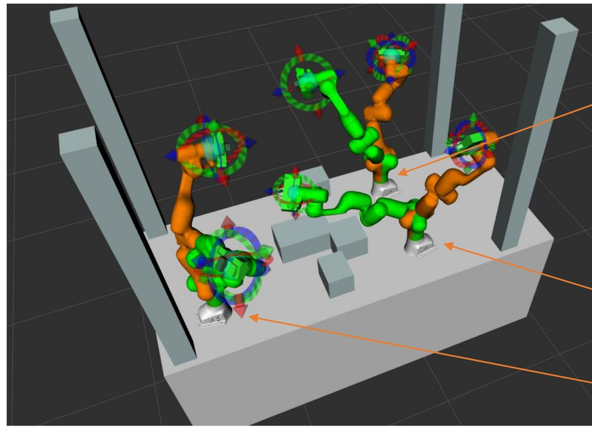
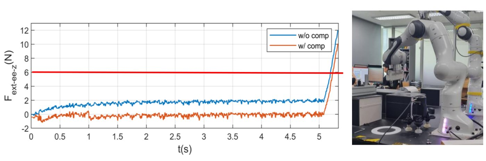
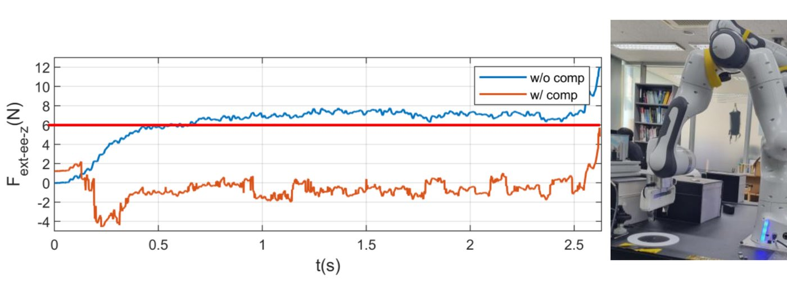

Stewart platform: kinematics and torque control
A forward-kinematics solver and a 500 Hz task-space torque controller for a 6-RSS Stewart platform, tested in Isaac Sim and run under torque control on hardware. The solver is mine; the controller was co-developed with a teammate.
Why torque control. Driving each motor to a position from inverse kinematics is simpler and faster. It also makes the platform stiff against contact, and with stiff position servos any calibration error in one leg loads the others through the plate. We controlled the pose of the top plate with motor torques instead, which needs the plate pose and a Jacobian at every cycle.
Kinematic model
Each leg (motor, crank, rod) is treated as a serial chain of six revolute joints: the motor \(\theta_{i1}\), then five passive joints, two at the crank tip, the rod's spin about its own axis, and two at the plate. Leg \(i\) then gives the plate pose as a product of exponentials,
with \(\mathcal{S}_j\) the screw axes of the leg joints (the same for every leg), \(T_{s,i}\) the motor frame in the base, \(T_{p,i}\) the attachment frame on the plate and \(M\) the leg's home pose. The six legs must agree on the plate pose. With the motor angles measured, that leaves the 30 passive angles \(\theta_p\) and 30 closure equations:
I solve them by damped least squares, \(\theta_p \leftarrow \theta_p + \Delta\theta_p\), starting from the previous cycle's solution:
where \(J_{p,i} \in \mathbb{R}^{6 \times 5}\) holds the passive-joint columns of leg \(i\)'s space Jacobian. This follows the geometric method of Yang et al. (2022). I wrote the solver in MATLAB first, on top of existing Lie-group helper routines (exponential, logarithm, hat), and then in C++, where one solve takes 1–2 ms.
Jacobian and control law
A rod carries force only along its axis \(l_i\). A motor torque \(\tau_i\) therefore puts a force \(\tau_i / \rho_i\) on the plate along \(l_i\), where \(\rho_i = x_i \cdot (r_i \times l_i)\) is the rod's moment arm about the motor axis \(x_i\) and \(r_i\) is the crank vector. With \(b_i\) the vector from the plate origin to rod \(i\)'s attachment point, summing the six rods gives the plate wrench \(\mathcal{F}\) (force, then moment about the plate origin) and, by duality, the Jacobian:
The controller is operational-space control with gravity compensation:
\(\mathcal{F}^{*}\) is a PD law on the plate's position error \(e_p\) and orientation error \(e_R\), damped by its linear and angular velocity \(v, \omega\). \(\tau_g\) is the gravity torque and \(\mathcal{M}\) a simplified joint-space inertia (crank inertia, with the rod mass lumped at its ends); \(\Lambda\) is regularized near singular poses. It runs as a ROS 2 node with actions for task-space and joint-space motion.
Trajectory optimization for approach and grasping
A single trajectory optimization, solved in two stages, that takes a Franka Panda with a three-finger gripper from a start configuration to a grasp scored by a force-closure cost, without collisions. Simulation only.
Two optimized trajectories. Links and fingers are drawn as the smooth shapes used for collision checking.
Optimization problem
The unknowns are the joint trajectory \(q(t) \in \mathbb{R}^{10}\) of arm and fingers, the joint torques \(u(t)\) and the final time \(t_F\):
The integrand is normalized torque, a smoothness term and a soft collision cost. \(d_{ab}\) is the gap between bodies \(a\) and \(b\), \(\epsilon_{ab}\) its margin, and \(\Phi\) is the terminal cost that makes the final configuration a grasp.
-
Collisions, as a constraint and as a cost. Every link is a smooth convex shape from the
lab's differentiable contact code, so each gap \(d_{ab}(q)\) has a gradient. The hard constraint
keeps a margin of 1–3 mm for arm–object and self-collision pairs; only the fingers may touch the
object, and only at \(t_F\). The same gaps also enter the cost through a softplus with its own
margin \(\epsilon_c\) (2 mm), which gives the solver a slope before a constraint becomes active:
\[ c(q) = \sum_{(a,b)} \sigma_\beta\big(\epsilon_c - d_{ab}(q)\big)^2 \]\[ \sigma_\beta(z) = \tfrac{1}{\beta}\log\!\big(1 + e^{\beta z}\big) \]
-
Terminal cost, in two stages. Stage 1 only pulls the three fingertips \(p_k\) to within a
radius \(R\) of the object at \(p_o\), with \(q_F = q(t_F)\):
\[ \Phi_{\text{pre}} = w_p \sum_{k=1}^{3} \sigma_\beta\big(\lVert p_k(q_F) - p_o \rVert - R\big)^2 . \]Stage 2 is warm-started from that solution, with \(\Phi_{\text{pre}}\) replaced by the force-closure measure from the lab's grasp-optimization code. For each test wrench \(w_j\) on the object, it asks how well contact forces \(f_i\) at the six finger bodies can cancel it:\[ \Phi_{\text{grasp}} = \frac{1}{12} \sum_{j=1}^{12}\; \min_{f_1,\dots,f_6}\; \Big[\, \tfrac12 \Big\lVert w_j + \sum_i P_i f_i \Big\rVert^2 + \tfrac12 \sum_i d_i^{2} \lVert f_i \rVert^2 + \tfrac12 \sum_i \big\lVert f_i - \Pi_{\mathcal{K}_i}(f_i) \big\rVert^2 \Big] \]\(P_i\) maps a contact force at finger body \(i\) to a wrench about the object's centre. \(d_i\) is that body's gap to the object, so the middle term allows force only where the gap is closed, and \(\Pi_{\mathcal{K}_i}\) projects onto the friction cone. A penalty on penetration is added, and the gradient with respect to \(q_F\) is taken through the inner minimum. The lab's code tested six force directions; I added six moments, and used the measure as the terminal cost of the trajectory problem.
-
Transcription. Hermite–Simpson direct collocation with \(x = (q, \dot q)\),
\(\dot x = f(x,u)\) from the articulated-body algorithm, \(h_k = t_{k+1} - t_k\) and
\(f_k = f(x_k, u_k)\), on 6 segments in stage 1 and 15 in stage 2:
\[ x_{k+1} - x_k = \tfrac{h_k}{6}\big(f_k + 4 f_{k+\frac12} + f_{k+1}\big) \]\[ x_{k+\frac12} = \tfrac12\big(x_k + x_{k+1}\big) + \tfrac{h_k}{8}\big(f_k - f_{k+1}\big) \]Solved in MATLAB with OptimTraj and fmincon. Gradients are supplied to the solver: analytic for the costs and collision constraints, central differences for the dynamics.
- Limitation. Putting approach and grasp into one problem makes it slow to solve.
Friction compensation for contact detection
A friction model for each joint of a Franka Panda that reduces the configuration-dependent bias in its estimated contact force.
Problem. The arm ends its approach when the end-effector force estimated from the joint torque sensors passes a threshold along the approach axis \(z\):
Here \(\bar J\) is the dynamically consistent inverse of the Jacobian, with \(\Lambda = (J M^{-1} J^{\top})^{-1}\). Joint friction leaks into \(\tau_{\text{ext}}\), by an amount that depends on the arm's configuration, so \(F_{\text{th}}\) had to be as high as 12 N.
Friction model
For each joint, with velocity \(\dot q\) and gravity torque \(\tau_g\):
- \(\tau_{c1}\) is Coulomb friction, and \(\tau_{c2}\) lets it differ between the two directions.
- \(\beta_1, \beta_2\) are viscous friction, linear and quadratic in speed.
- \(\alpha\,\tau_g\) makes friction depend on the load the joint carries. Gravity torque serves as a proxy for the configuration, on which the bias depended.
- \(\tau_1, \tau_2\) cover the stuck region near zero velocity, where the first line jumps with the sign of a noisy \(\dot q\).
The model combines two earlier ones, the stick and slip regions of Lee et al. (IROS 2015) and the gravity-torque term of Kim et al. (UR 2019), and is fitted on varied motions rather than a single one. In motion without contact the true external torque is zero, so the measured \(\tau_{\text{ext}}\) is what the model has to explain. The parameters \(\theta\) are fitted by least squares, and the force is then estimated from the compensated torque:
Data and model choice. Random start-to-goal motions on three arms, logged at 1 kHz; 10 motions for fitting and 3 held out. I compared six versions of the moving-joint model, from 3 to 10 parameters, by the residual torque on the held-out motions. The five-parameter version above had the lowest error (0.26 N·m, against 0.60 uncompensated); six and eight did no better, and ten did worse (0.36). With the two static terms that is 7 parameters per joint.




- Limitations. The static-friction part needs a short velocity history, so the first 0.3 s of a motion is left out of detection. The compensated estimate is noisy where the measured joint velocity is noisy.
- Use. Implemented in the lab's 1 kHz C++/ROS controller, where the compensated estimate is computed online next to the existing detector.